01 — COMPUTER GRAPHICS
Virtual Chapel
A browser-based 3D experience exploring lighting, cameras, materials and shadow mapping.
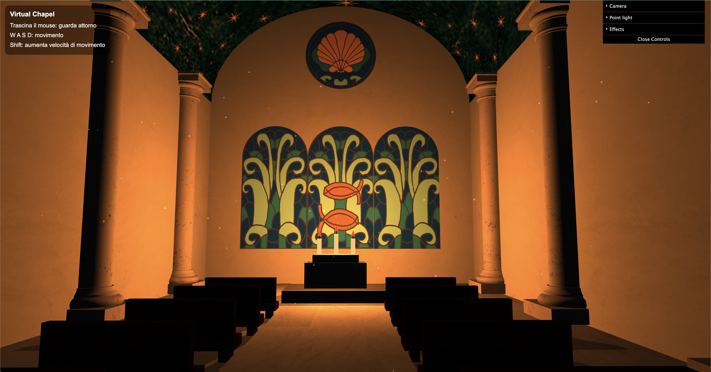
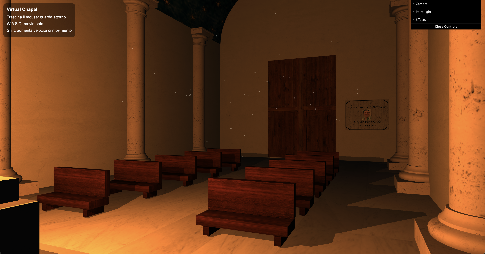
Academic projects developed throughout my studies.
Every project I’ve worked on has helped shape who I am today, even those that did not align with my interests. I’m grateful to my dear colleagues who shared these adventures with me.
A browser-based 3D experience exploring lighting, cameras, materials and shadow mapping.


A web-based extension for consolidating legal documents, with a focus on structured data, navigation and document comparison.
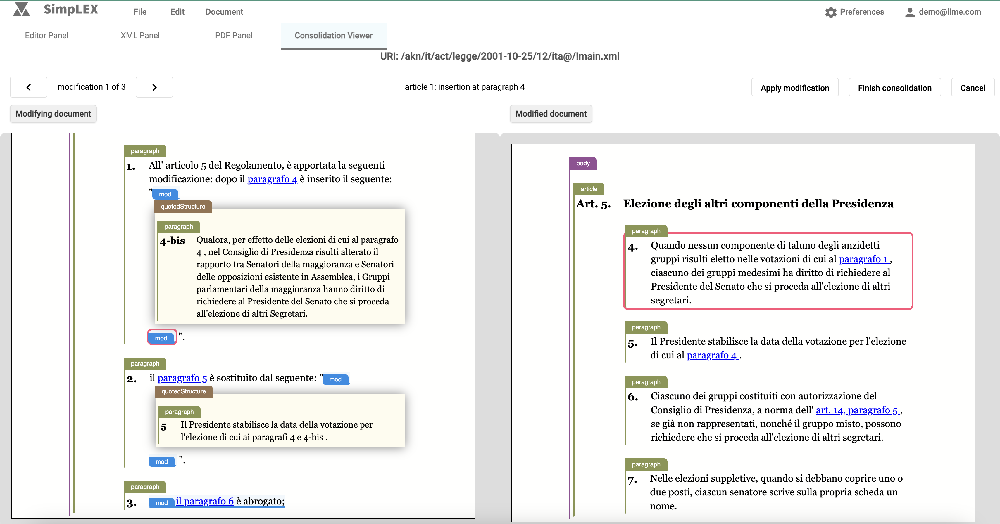
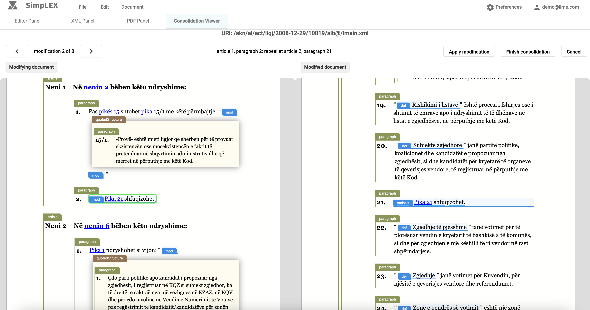
A redesign of “ClasseViva”, an online platform for managing school activities, developed for the Usability and User Experience course.
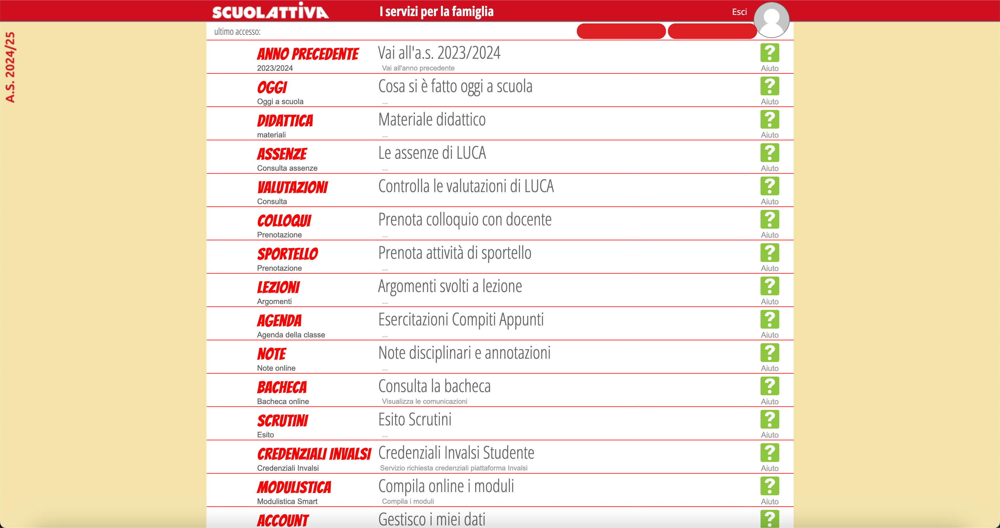
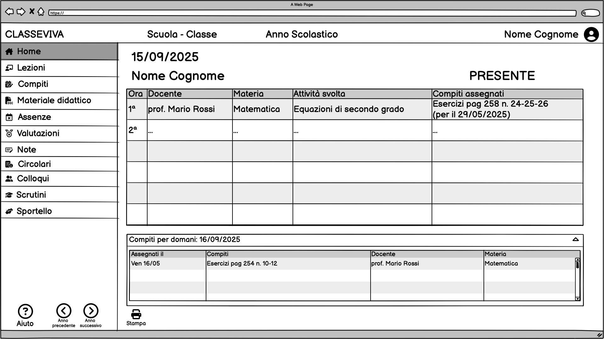
“Twitter is dead; Squealer has taken its place.” This was the project brief for the Web Technologies course. Unfortunately, the project was hosted on a department computer, so it is no longer fully recoverable and the databases have been lost. However, I remember having so much fun coding it with my colleague!
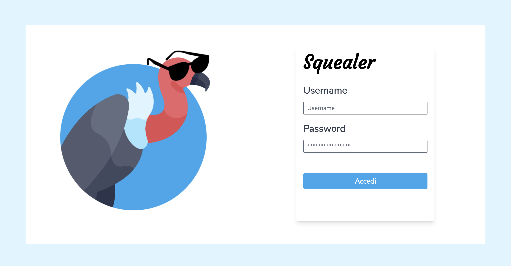
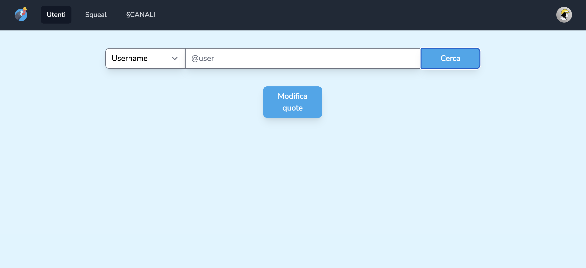
An Android app designed to track users’ physical activity by leveraging the phone’s sensors for step counting and location tracking, while making full use of the device’s capabilities.
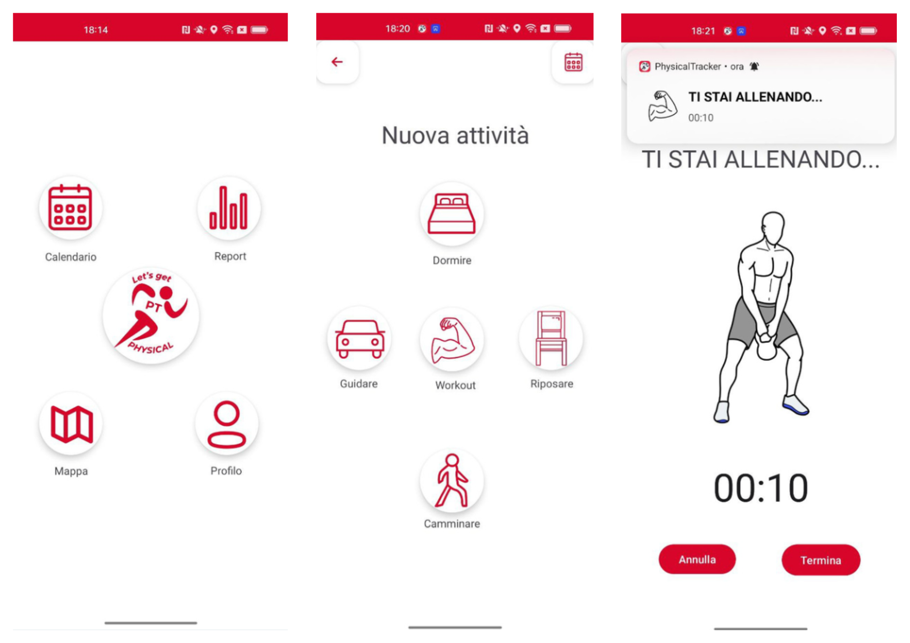
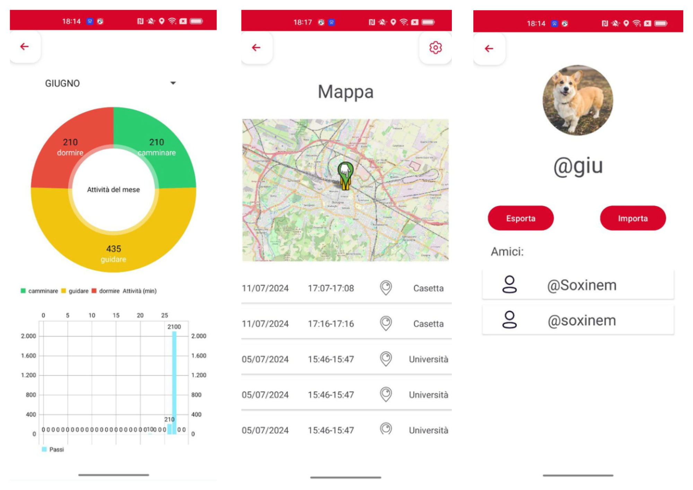
An ASCII game developed for the Programming course. It was my first university project and my first experience working as part of a team.
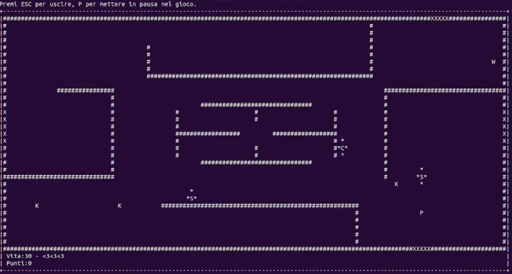
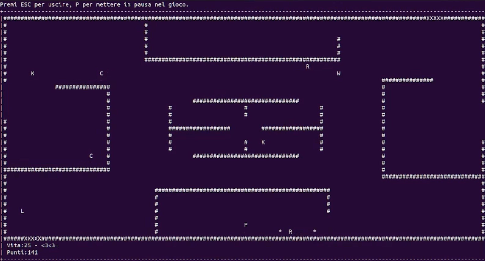
A mobile web application that allows users to play chess against bots or other players, based on the Really Bad Chess variant. It was also an opportunity to experiment with Telegram bots. The main objective of the project, however, was to experiment with the Agile methodology through sprints and weekly interactions with stakeholders.
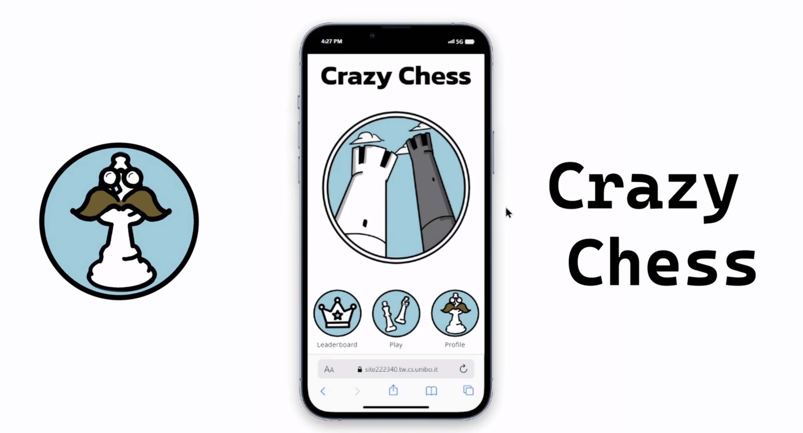
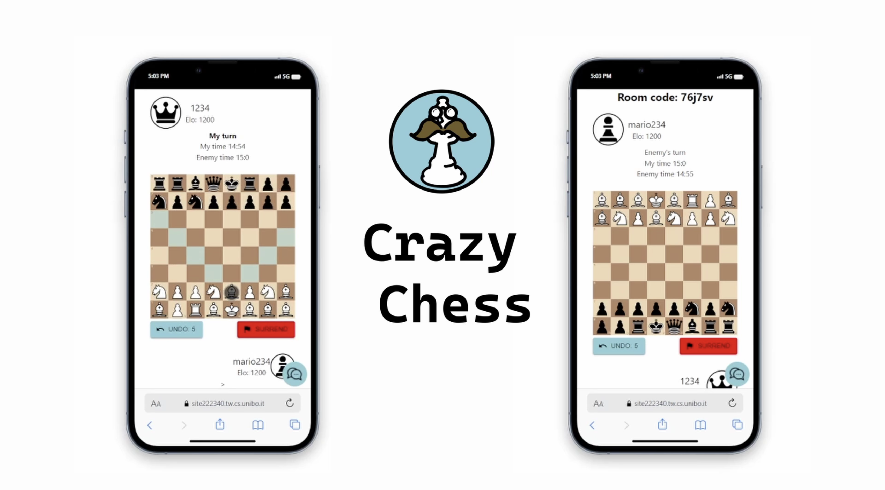
The project consisted of implementing, using Java and ANTLR, the semantic analysis and intermediate code generation phases for HPCLan, a simplified imperative programming language designed for high-performance computing (HPC).
Development of a bot capable of playing tic-tac-toe on boards of varying sizes.
Implementation of parallel algorithms for computing correlograms using OpenMP and MPI.
Implementation of neural networks for satellite image inpainting. Conversion of mathematical expressions from infix to postfix notation.
Implementation of binary classification models to analyze bias in the Adult Census Income dataset.
A project that analyzes the emotions expressed in English-language songs through text analysis and semantic web technologies.
A digital forensics project based on a simulated court case involving two companies, one of which accused the other of stealing its designs. The project involved acting as expert witnesses for both parties, analyzing the companies’ computers and preparing reports documenting the findings
Database management software for a fictional library, supporting the management of books, DVDs and events.